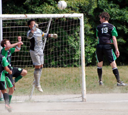
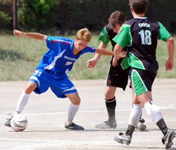

|
OiFuto, Saturday 25th August,
We had the honor of welcoming the Vagabonds to the first division this year, and weren't sure what to expect. Word on the street was that they had a lot of help from BFC players last season, which is obviously no longer available...
But they came right at the Hibs and had us on our heels in the early going. They have a dangerous young forward who has skills and works hard, and he nearly hurt us twice early, once on a solo attempt where hero Hitoshi managed to slap the ball away, and on a cross that just missed its target.
The Hibs settled down after that and began to work the ball around the pitch. But the Vagabonds kept 6-7 players back and chances were hard to come by. Forward Andre nearly worked his way through once from left, and a good exchange with Tomo put Kuni in for a shot, but their keeper was up to the task both times.
The Vagabonds only attacked with limited numbers but won a few corners and then poured everyone forward - they took advantage of their size and only goal-line saves by defenders Rainer and Numa kept them scoreless. 0-0 at half time.
In the second half the Hibs loosened up a bit and the Vags gave away fouls under the pressure. Kuni had a solo run from the right and was brought down just outside of the box, Mike's free kick went in - GOOOAAALL - nope, offside. But the play fired us up - Jay broke free on a cross from another Mike free kick but missed by inches, and finally a cross by Kuni found new recruit Eduardo wide left and he hammered home from close range. Keita hit the crossbar minutes later with a long blast that rebounded out past the 18-yard box.
1-0 final score - a fair result. The Vagabonds were determined on defense and created chances, if they play like that they'll hurt some teams this year. But enough with the second team, bring on BFC...
Report by Jay Alabaster
|